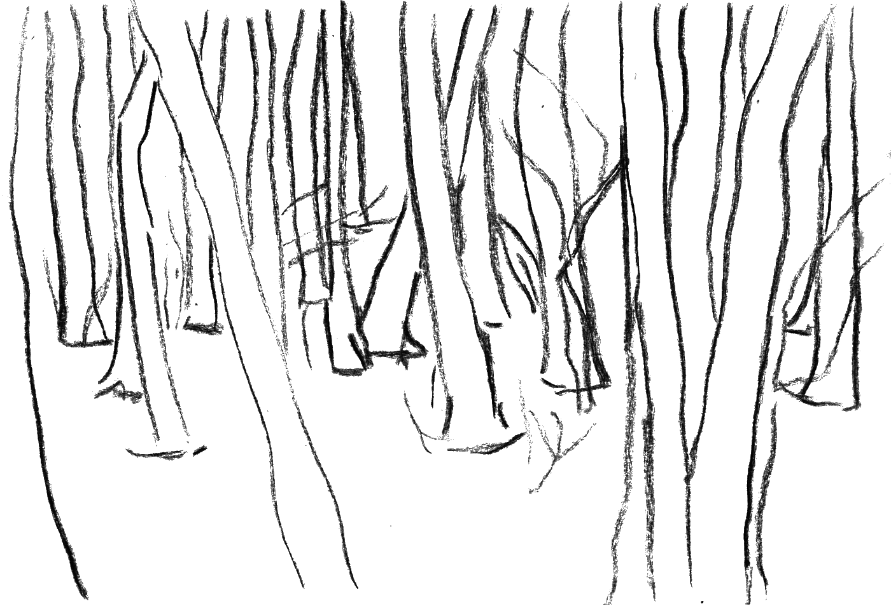

history
forest
Forest is an ecosystem consisting of living organisms, soil and climate, but also a place. As a matter of fact, we still don't understand how forests work at large, because they are such complicated and diverse systems. It has recently been discovered that soil has an even bigger role than we thought.
According to current view the Finnish word for forest – metsä – has derived from an ancient Northern Baltic language around 2000 to 3000 years ago. It means approximately ‘something in between’. It originates from the time agriculture started spreading, and land could be recognized as either settlement, field or what was left between them: metsä. Before this, there was no need for a separate word, as everything was forest.